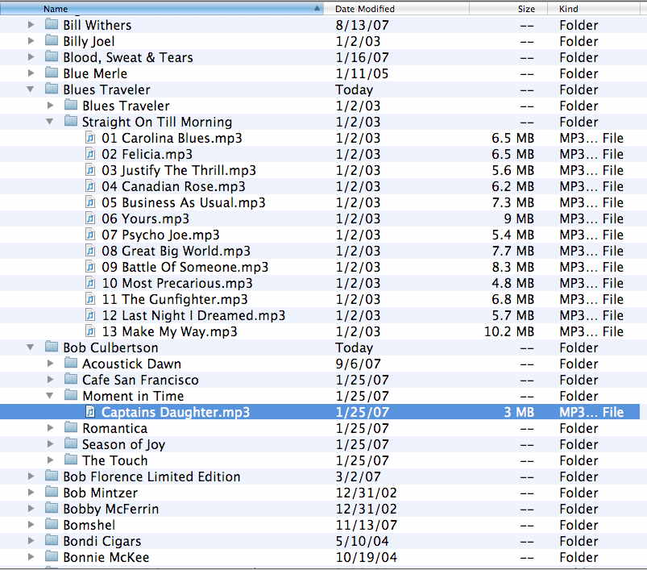
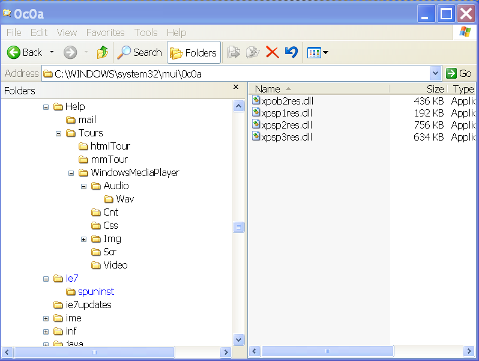
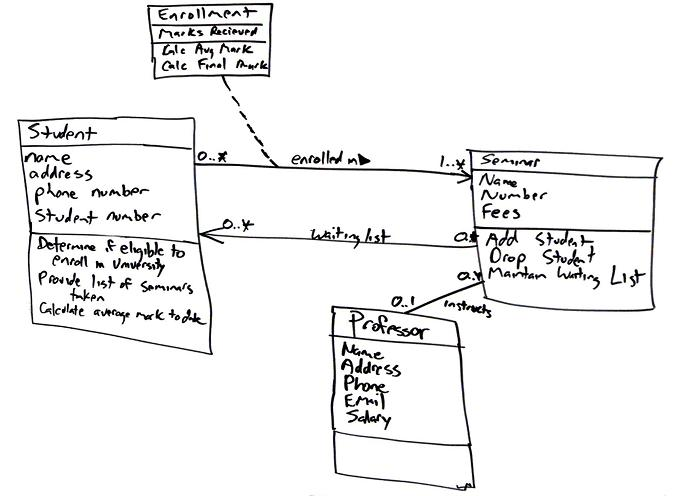
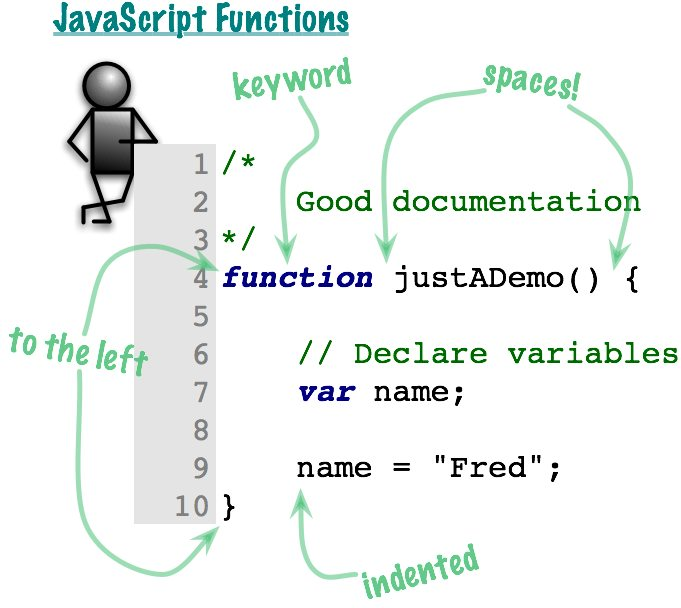

Learning Unit 4
Learning Unit 4Introduction to Modularization Using Functions
File: unit4/introToModularization.html
Readings
- JavaScript Step by Step
- Chapter 7 - Working with Functions
Getting Complicated
- When we have too much information, too many files, too many things, we humans tend to organize them.

- We've been doing it for a long time
- Computers let us handle more information but we still need to have a way to keep track of it all.

- We have many schemes for doing this

- We even do it with us!
- And we also have to organize software. Our programs just get too big.

- The thing that we have too much of in programming is complexity. We'll start learning how to program more complex problems by learning about
Modularization and Functions.
Modularization
- The process is to break up our code into different parts. We've already been doing that. Here's a Planning Lists from an example back when the program was just one block of code:
The List of Input Variables:
character1
character2
character3
The List of Output Variables:
character1
character2
character3
The Process Checklist:
Define all variable
prompt user for three individual characters
Sort the three characters into ascending order
Output three characters in ascending order
- For Learning Units 1 - 3, by identifying the processes as we start designing a program, we can divide the program up into different sections as we later code it..
- But, what if a program is so complex that it would have a lot of processing steps? What if it's so big a process that it really has its own set of subprocesses? That would be difficult to manage, and later, modify, if it was written as just one large program.
- The solution is to break our porgrams down to smaller and smaller parts until they are all manageable. Each process or subprocess will have its own set of processing steps, and, when written later, its own program code. In JavaScript we will do this with
functions.
mod•u•lar
adjective
1. employing or involving a module or modules as the basis of design or construction : modular housing units.
The Modularization Process
- Here are the general principles about modules or functions.
- A module (in JavaScript, remember this is a
function) should be focused on a task, that is, just one task. It should include only the operations that do that task. Modules (in JavaScript, functions) are in effect, like specialists. - The name of a module (in JavaScript, a function) should describe the work that the module (function) will do. Always start the name of a function that you create with a verb and then have a few nouns (and an adjective is often good too.) Examples:
printPageHeadingscalculateSalesTaxvalidateInputDate
- A module (in JavaScript, remember this is a
The Mainline (aka Main aka Controller) Module (Function)
- All programs will have one module (function) that controls the operation of the whole program. These were typically called the
Mainline Modulein the beginnings of modular programming. These days in our Object Oriented world they are more likely called Main functions aka Controllers. Mainfunctions (akaControllers) run the show--they tie all the other modules together. They should be easy to read and their logic should be very clear. We'll see many examples. Just remember that the terms "main" and "mainline" and "controller" are just terms for the same thing--different authors simply use different terms. In these learning materials, these terms will be used interchangeably.
The Benefits of Modular Design
- Ease of understanding. Each module (function) should perform just one task.
- Reusable code. Modules used in one program can sometimes also be used in other programs.
- Don't Repeat Yourself! Using modules can help to avoid code duplication. This is called the "DRY" principle and is a very strong convention among modern programmers.
- Efficiency of Maintenance. Each module should be self-contained and have little or no effect on other modules within the program. This lets us make future changes to programs in less time and with less worry that we are adding new bugs to the code.
- Object Orientation. Modularization is a big step towards Object Orientation. You could think of OO as modularization taken to a higher level. All modern programming languages and methodologies now use this new paradigm.
JavaScript Functions
- When we have broken the to-be-written application down into reasonable tasks, we write our JavaScript program in the form of
functions. In fact, from now on, when you hear the phrase "JavaScript program" you should think "set of functions." A program from now on will always consist of a set of functions, functions coordinated from the Main/Mainline/Controller function. - As we start to see now in unit 4, our functions will be physically located in external files. In the very simplest case, there is only function in the set, i.e. we would have just one function in the JavaScript file. But this would rare to have a set of functons consist of only one function in the set. Thus, in actual real-world applications, we would have lots of functions in a single JavaScript file. (That's why some authors refer to JavaScript files as "JavaScript library files," although the word "library" can imply a JavaScript file that contains "common" functions, i.e. functions used by more than just one program.)
- Here's a simple function.
- Here's a bigger picture with some finer details.

How Functions Work
- Here's a sample to illustrate how functions work in JavaScript. Here's the code:
- Here's the output:
- Does something seem odd to you? Do the functions look like they are in the right order? Well, they are. A new and strong convention among professional JavaScript programmers is that functions should be declared before they are called. This is in our newly updated course coding standards right here.
- How did that work?
- The program starts in
theMainline()function. When it gets to this line it does something different.
- Because of the parentheses,
(), it will look for a function with that name. It first looks in the file that it is in right now. And there it is!
- The JavaScript engine will suspend the first function and jump to the called function. It will run all the code in that function and go back up to the first one. Then it will continue on where it left off.
- Let's see this in action:
- Of course, now we do a lab!
A First Look at Variable Scope
scope
noun
1. the extent of the area or subject matter that something deals with or to which it is relevant.
: we widened the scope of our investigation | such questions go well beyond the scope of this book.
: we widened the scope of our investigation | such questions go well beyond the scope of this book.
Thesaurus:
the scope of the investigation, EXTENT, range, breadth, width, reach, sweep, purview, span, horizon; area, sphere, field, realm, compass, orbit, ambit, terms/field of reference, jurisdiction; confine, limit; gamut.
Naming Conflicts
- It's sometimes hard to come up with good variables names for your projects. However, having clear, well thought-out variable names (and function names) is crucial for the long-term success of an application. Remember, as a software developer, you will have to return to the application again and again over the years, to accomplish enhancements.
- In the early days of computer programming two limitations made naming very hard. First, early programming languages set the maximum length of a variable name to very small--limits of six or eight characters were typical. Then, when we made a variable we had to make sure that the names we picked were not the same as any other names in programs at our site.
- This resulted in variable names like these. The first three letters were an abbreviation for the overall system and the rest were an abbreviation of what it was. Can you see what they are?
TCSTLTAXMMSTRSRCCDPPNAME
- All this because programs could see all the variables!
Variable Scope to the Rescue!
- There is a solution to this in all modern languages. Today there is more than one scope for variables. Let's first talk about the scope where variables are available everywhere.
- Global Scope
- Variables that exist throughout an entire JavaScript file are called
Global Variables. Their values can be changed anywhere in the code and even by other functions.
- Variables that exist throughout an entire JavaScript file are called
- Here's a demo of how this works
- And here's the lab for this.
The Steps in Modularization
Here are some basic steps in the process of modularizing an application.
- Define the overall problem by dividing it into its three components: input, output, and processing. This is what we have already been doing. The only difference is that we are now typically thinking of the processes as modules (functions)..
- Group the processes into subtasks or functions to determine the modules that will make up the program. Remember that a module is dedicated to the performance of a single task. Not all activities need to be identified at this point. We may add more subtasks as we develop the modules later.
- Establish the logic of the main controlling module (function) using pseudocode. Typically, this top module (function) should contain some initial processing before the loop, some processing within the loop, and some final processing after exiting the loop. It should contain calls to the major processing modules of the program, and should be easy to read and understand. (Note: Physically this top function is placed as the last function in the JavaScript file, even though on a strucuture chart is drawn at the top of the chart.)
- Develop the pseudocode for each successive module in the main controlling module.
Let's See The Whole Process in Action
- When our programs start getting too big we need to make some changes. This example goes through the process of modularization right through the JavaScript